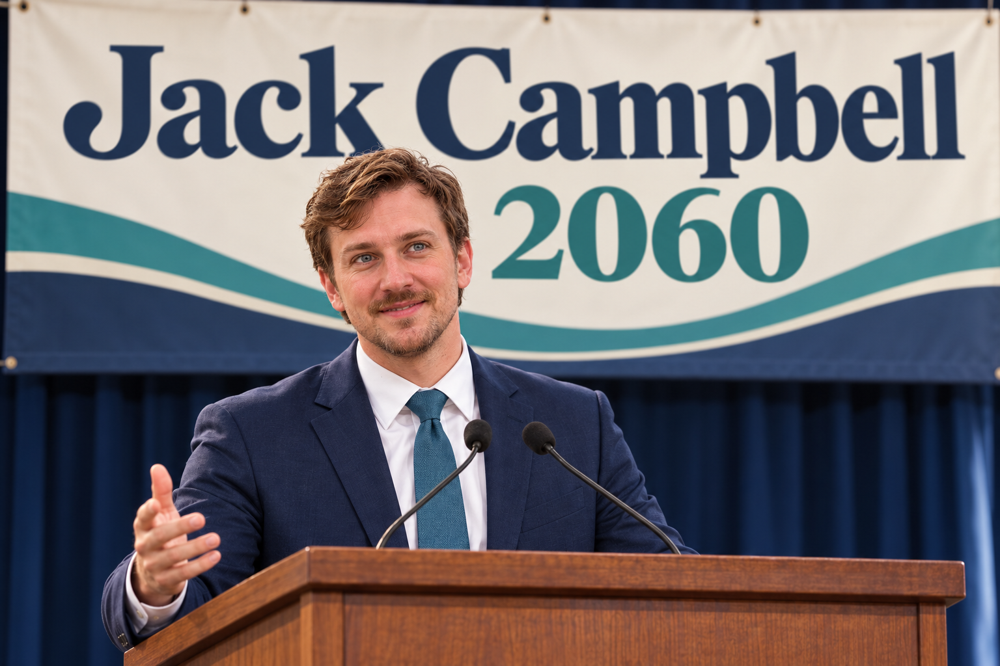

Care without barriers.
Universal, affordable health care. Strong mental health services. Real support for the nurses, caregivers, and families who keep us well.
HEALTH & DIGNITYROOTED IN WNC. READY FOR WHAT’S NEXT.
Where care is a right. Opportunity is shared. And every community has a say in what comes next.
See what we’re fighting for
01 / OUR PRIORITIES
A strong country starts with the everyday things that let people live with dignity and look ahead with confidence.
Universal, affordable health care. Strong mental health services. Real support for the nurses, caregivers, and families who keep us well.
HEALTH & DIGNITYHomes people can afford, wages people can live on, and accessible education. An economy that rewards work and gives the next generation room to thrive.
SHARED OPPORTUNITYClean energy, resilient infrastructure, and reliable broadband. Prepare for a changing climate while creating good jobs in the places we call home.
CLIMATE & RESILIENCE02 / MEET JACK
Jack Campbell grew up in Western North Carolina in the years after Hurricane Helene, surrounded by people rebuilding more than roads and homes.
Born into a region still finding its footing, Jack learned the story of the storm through neighbors who showed up for one another and communities determined to build back stronger. Their example shaped his belief that resilience is something we create together.
His mother, a nurse, taught him to listen first, treat every person with dignity, and see the human being behind every problem. His father, an IT systems specialist, showed him how thoughtful, dependable systems can make people’s lives better, and why fixing a problem means understanding how all the pieces connect.
Today, those lessons guide the man Jack has become: lead with empathy, do the hard work, and build a government people can count on.
03 / THE ROAD AHEAD
From the mountains of Western North Carolina to communities across America, we can choose a future defined by care, fairness, and possibility.
Get to know Jack